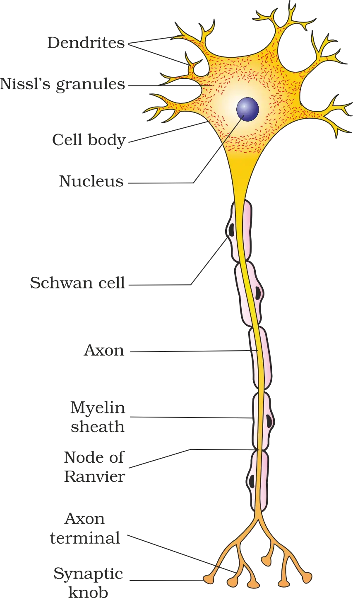
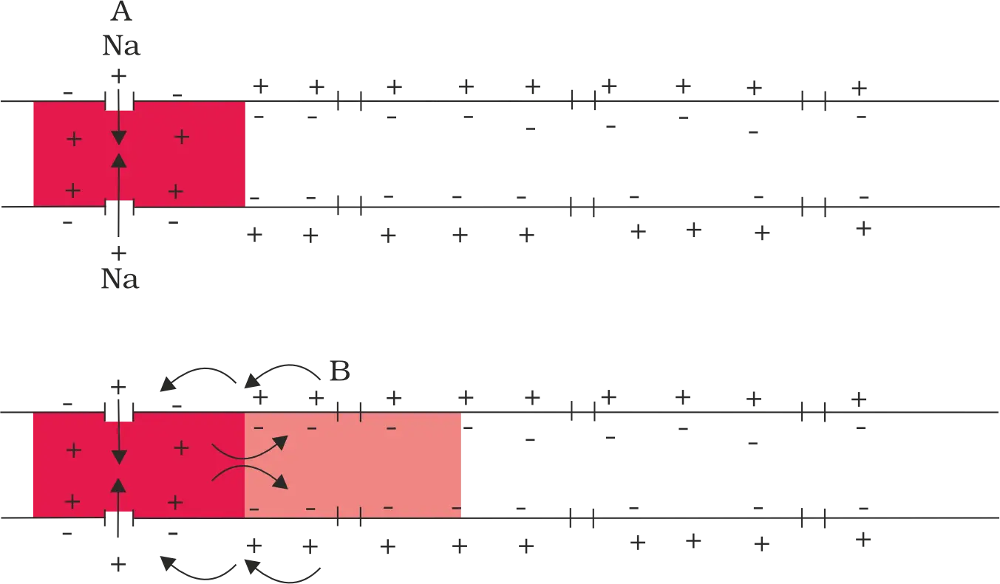
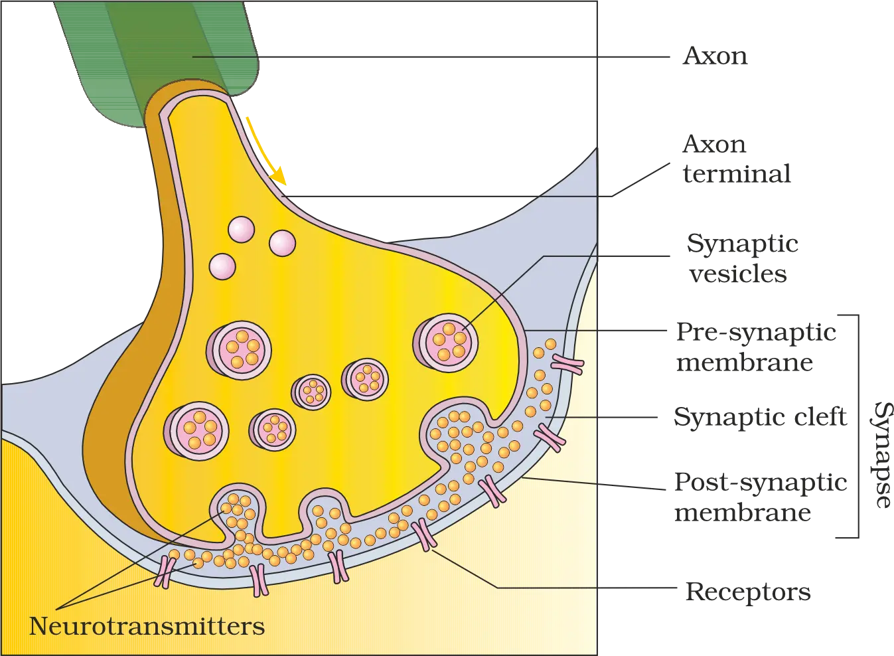
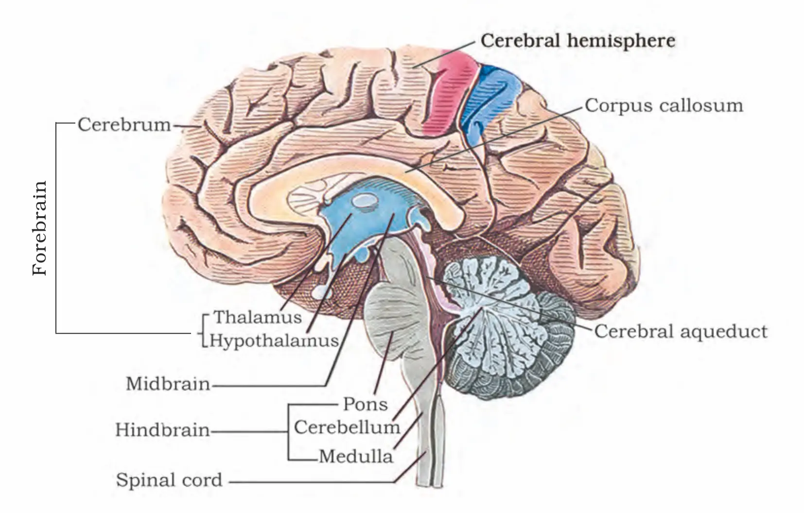

NEURAL CONTROL AND COORDINATION
Neural Control and Coordination: Overview
- Increased respiration rate (lungs)
- Increased heart beat (heart)
- Increased blood flow through blood vessels
Neural systemFast coordination via organised, point-to-point connections
Endocrine systemChemical integration via hormones (generally slower, widespread)
18.1 Neural System
- Detect stimuli
- Receive stimuli
- Transmit different kinds of stimuli as impulses
Neural organisation across animals (trend)
Lower invertebrates (e.g., Hydra)Very simple: network of neurons (nerve net)
InsectsBetter organised: brain present + ganglia + neural tissues
VertebratesMore developed neural system
18.2 Human Neural System
Major divisions: CNS and PNS
Central Nervous System (CNS)Brain + spinal cord; site of information processing and control
Peripheral Nervous System (PNS)All nerves of the body associated with CNS
Nerve fibres of PNS: afferent vs efferent
Afferent fibresCarry impulses from tissues/organs → CNS (sensory input)
Efferent fibresCarry regulatory impulses from CNS → peripheral tissues/organs (motor output)
- Afferent = Arrives at CNS (to CNS)
- Efferent = Exits CNS (from CNS)
PNS divisions: somatic vs autonomic
Somatic neural systemRelays impulses from CNS → skeletal muscles (voluntary control)
Autonomic neural system (ANS)Transmits impulses from CNS → involuntary organs + smooth muscles
ANS subdivisions: sympathetic vs parasympathetic
Sympathetic neural systemSubdivision of ANS
Parasympathetic neural systemSubdivision of ANS
Visceral nervous system (as described here)
- From CNS → viscera
- From viscera → CNS
18.3 Neuron as Structural and Functional Unit of Neural System
Basic structure of a neuron
Cell body (cyton)Cytoplasm + typical organelles + Nissl’s granules
DendritesShort, repeatedly branching fibres; contain Nissl’s granules; carry impulses toward cell body
AxonLong fibre; distal end branched; conducts impulses away from cell body

Axon terminals and neurotransmitters
- a synapse (neuron-to-neuron junction), or
- a neuromuscular junction (neuron-to-muscle junction)
Classification of neurons (by number of axon/dendrites)
Multipolar1 axon + 2 or more dendrites; found in cerebral cortex
Bipolar1 axon + 1 dendrite; found in retina of eye
UnipolarCell body with 1 axon only; usually in embryonic stage
Types of axons (myelination)
Myelinated axonEnveloped by Schwann cells forming a myelin sheath; gaps = nodes of Ranvier; found in spinal & cranial nerves
Non-myelinated axonEnclosed by a Schwann cell but no myelin sheath; commonly found in autonomic and somatic neural systems
18.3.1 Generation and Conduction of Nerve Impulse
Resting (polarised) state of neuron membrane
- Axonal membrane is more permeable to K+
- Axonal membrane is nearly impermeable to Na+
- Membrane is impermeable to negatively charged proteins in axoplasm
- Inside (axoplasm): high K+, high negatively charged proteins, low Na+
- Outside fluid: low K+, high Na+
Sodium–potassium pump and maintenance of ionic gradients
- Outer surface of axonal membrane becomes positively charged
- Inner surface becomes negatively charged
Action potential (nerve impulse): generation
Stimulus at site A
→Membrane becomes freely permeable to Na+
→Rapid influx of Na+
→Polarity reverses (depolarisation)
- After reversal: outside becomes negative, inside becomes positive at site A.
Conduction of impulse along the axon (local circuit)

- Inner surface: current flows from A → B
- Outer surface: current flows from B → A (completes the circuit)
Repolarisation and return to resting state
Na+ influx (depolarisation)
→K+ permeability rises
→K+ diffuses out
→Resting potential restored
18.3.2 Transmission of Impulses
Types of synapses
Electrical synapsePre- and post-synaptic membranes extremely close; current flows directly
Chemical synapseMembranes separated by fluid-filled synaptic cleft; uses neurotransmitters
Electrical synapse
- Pre- and post-synaptic membranes are in very close proximity.
- Electrical current flows directly from one neuron to the other across the synapse.
- Transmission is similar to impulse conduction along a single axon.
- Impulse transmission is always faster than across a chemical synapse.
- Electrical synapses are rare in our system.
Chemical synapse (mechanism of transmission)

Action potential arrives at axon terminal
→
Synaptic vesicles move to pre-synaptic membrane
→
Vesicles fuse with plasma membrane
Neurotransmitters released into synaptic cleft
→
Bind specific receptors on post-synaptic membrane
→
Ion channels open; ions enter
New potential generated in post-synaptic neuron
→
Response may be excitatory or inhibitory
- Axon terminals contain vesicles filled with neurotransmitters.
- Binding of neurotransmitter to its receptor opens ion channels.
- Ion entry can generate a new potential in the post-synaptic neuron.
- The new potential can be excitatory (promotes firing) or inhibitory (reduces likelihood of firing).
18.4 Central Neural System
Functions controlled/regulated by the brain
Voluntary movementsconscious muscle actions
Balanceposture + equilibrium
Vital involuntary organslungs, heart, kidneys, etc.
Thermoregulationkeeps body temperature stable
Hunger & thirsthomeostatic drives
Circadian rhythms24-hour cycles
Endocrine gland activitiescontrols several glands
Human behaviouractions + responses
Vision, hearing, speechmajor processing site
Memory, intelligence, emotions, thoughtshigher functions
Protection of the brain: skull and cranial meninges
Dura materOuter layer
ArachnoidVery thin middle layer
Pia materInner layer; in contact with brain tissue
Outer
→Dura
→Arachnoid
→Pia
→Inner
Major divisions of the brain
ForebrainCerebrum, thalamus, hypothalamus
MidbrainBetween forebrain and pons; contains cerebral aqueduct; corpora quadrigemina dorsally
HindbrainPons, cerebellum, medulla (medulla oblongata)
Think of the brain like a “3-storey control building”: forebrain (planning + higher thinking), midbrain (relay/links), hindbrain (life-support + coordination).
18.4.1 Forebrain

Cerebrum: structure and organisation
- Largest/major part of the human brain.
- A deep cleft divides it longitudinally into left and right cerebral hemispheres.
- Hemispheres are connected by corpus callosum (tract of nerve fibres).
- Outer cell layer covering hemispheres = cerebral cortex, thrown into prominent folds.
Functional areas of cerebral cortex
- Motor areas
- Sensory areas
- Association areas: regions neither clearly sensory nor motor; responsible for complex functions such as intersensory associations, memory, and communication.
Thalamus
Hypothalamus
- Body temperature
- Urge for eating
- Urge for drinking
Limbic lobe / limbic system
- Sexual behaviour
- Emotional reactions: excitement, pleasure, rage, fear
- Motivation
18.4.2 Midbrain
- Located between thalamus/hypothalamus (forebrain) and pons (hindbrain).
- A canal called the cerebral aqueduct passes through the midbrain.
- Dorsal portion consists mainly of four round swellings (lobes) called corpora quadrigemina.
Forebrain (thalamus/hypothalamus)
→Midbrain (cerebral aqueduct; dorsal corpora quadrigemina)
→Hindbrain (pons)
18.4.3 Hindbrain
Pons
- Consists of fibre tracts that interconnect different regions of the brain.
Cerebellum
- Has a very convoluted surface to provide additional space for many more neurons.
Medulla (medulla oblongata)
- Connected to the spinal cord.
- Contains centres controlling:
- Respiration
- Cardiovascular reflexes
- Gastric secretions
Brain stem
Midbrain
→Pons
→Medulla oblongata
Chapter Summary
- Impulse transmission neuron-to-neuron occurs at synapses (may have a synaptic cleft or not).
- Electrical synapses: direct current flow; always faster; rare.
- Chemical synapses: neurotransmitter release from vesicles → binds receptors → ion channels open → ions enter → new potential; can be excitatory or inhibitory.
- Brain is the command and control centre; protected by skull and meninges (dura, arachnoid, pia).
- Brain divisions: forebrain (cerebrum, thalamus, hypothalamus), midbrain (cerebral aqueduct; corpora quadrigemina), hindbrain (pons, cerebellum, medulla).
- Cerebrum: hemispheres connected by corpus callosum; cortex = grey matter; inner myelinated tracts = white matter; association areas handle higher functions.
- Thalamus: major coordinating centre for sensory and motor signalling.
- Hypothalamus: temperature, eating, drinking; neurosecretory cells secrete hypothalamic hormones.
- Limbic system (amygdala, hippocampus etc.) + hypothalamus: emotion, motivation, sexual behaviour.
- Medulla: respiration, cardiovascular reflexes, gastric secretions; brain stem connects brain and spinal cord.